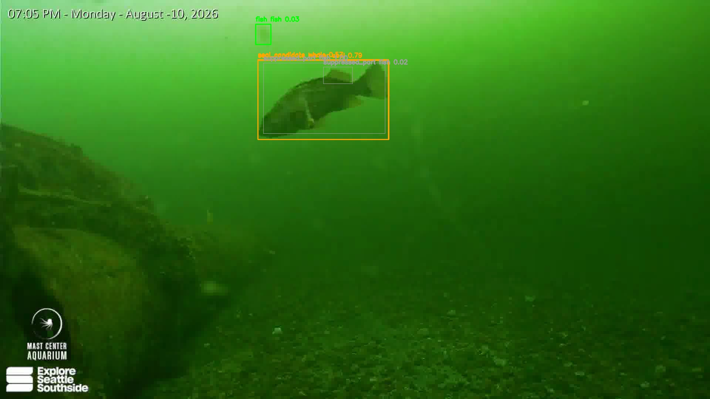

Nothing on the linked pages is an identification. These are queues of model output waiting for a person, published so the queue itself can be checked. An open-vocabulary label like “harbor seal” is the prompt the model was asked about, not a finding. Where a person has reviewed this footage, four of the five model calls they checked were wrong.
What changed, pass by pass
| Pass | Sampling | Prompt classes | Detections | Needing review | Clips flagged |
|---|---|---|---|---|---|
| Pass 1, permissive rules | every 5s | 5 | 2,055 | 474 | 45 |
| Pass 2, tightened decision layer | reused pass 1 | unchanged | 2,055 | 32 | 9 |
| Pass 3, wider vocabulary | every 2s | 25 | 3,860 | 154 | 37 |
Pass 1 to pass 2 is the controlled result
The conservative run did not re-run detection. It records
fusion_only_from pointing at the permissive run and reuses its
2,055 detections across the identical set of
86 source clips. The only thing that changed is the decision layer, so the drop
from 474 to 32 is attributable to the rules and to nothing
else.
Same detections, re-fused. The conflict rule was corrected to read overlap, containment and area ratio against one fish rather than as three independent maxima over every overlapping fish, which had let a confident fish box sit under a marine mammal label without contradicting it.
In clips rather than rows: 45 of 86 needed opening after pass 1, and 9 of 86 after pass 2.
Pass 3 asks a wider question, and pays for it
Detection re-run: a frame every 2 seconds instead of 5, and the prompt set widened from 5 classes to 25, adding whale, porpoise, otter, seabird and octopus among others. More of the footage is looked at and more things can be named, so the queue grows again. That is the cost of asking a wider question.
Pass 3 is not a like-for-like comparison with the first two. Sampling went from every 5 seconds to every 2, which is why it finds 3,860 detections in 106 clips where pass 1 found 2,055 in 86. A queue of 154 against pass 2’s 32 is a wider net, not a regression in the rules, and reading it as one would be the wrong lesson to draw from this page.

The same idea on land
The Sunrise Mountain camera runs the same shape of problem through a different filter. MegaDetector reported 3,319 detections across 5,795 usable frames; scene filtering set aside 3,306 of them as boxes that recur at fixed pixel coordinates on a camera that never moves. 13 survived. The candidate page shows the suppressed boxes alongside the survivors, so the filter’s working is auditable rather than asserted.
3,576 frames were too dark to carry information and were never sent to the model. This camera has no infrared illumination, and the night/day split was measured at luma 83 rather than assumed.
What this page does not show
It does not show accuracy. There is no confirmed count to measure against, because the review pass that would produce one has not been run on this footage. What it shows is how much work the pipeline is handing to a person, and that the number moved for a reason that can be pointed at.
Each linked queue carries a verdict layer: judging a card records the verdict in your own browser, and the export button hands back a file. Nothing is sent anywhere. A disagreement about a specific detection is the most useful thing anyone can send.